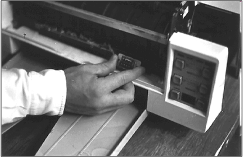
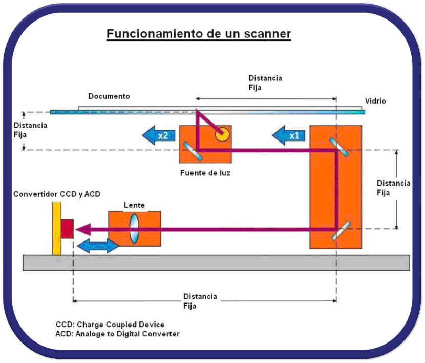
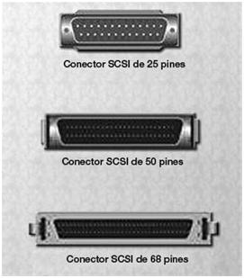

INTRODUCCIÓN
El escáner es un periférico del ordenador que permite analizar y transcribir documentos escritos en papel a formato digital. En los días que corren, los escáneres suelen estar implementados en impresoras, pasando a llamarse impresoras multifunción, o incluso en dispositivos móviles, siendo conocidos como CamScanner.
ORÍGENES
Estos aparatos surgieron en 1984 cuando Microtek crea el MS-200, el primer escáner blanco y negro, desarrollado para el sistema Macintosh.
FUNCIONAMIENTO
Los escáneres emplean la luz para “copiar” las imágenes o documentos impresos a formato digital, usando una técnica conocida como OCR (Optical Character Recognition). A esta imagen se le aplican ciertos algoritmos matemáticos para obtener la máxima calidad posible del dispositivo. Al obtenerse una imagen digital, es posible corregir los fallos que pudiera tener el original (de hecho, muchos escáneres ya incluían una función para editar imágenes).
CALIDAD DE IMAGEN
Los algoritmos del apartado son los encargados de determinar la calidad de la imagen escaneada. El primero de los parámetros a tener en cuenta es la profundidad del color, dada por el vector de escaneado, siendo el mínimo de 24 bits (ya que es la mínima cantidad necesaria para procesar la imagen con cierta definición). Otro importante parámetro es la resolución de la imagen, siendo esta medida en píxeles por pulgada (ppp). Los fabricantes, en lugar de mostrar la resolución del dispositivo en si, prefieren enseñar la resolución combinada entre el escáner y el ordenador. El último parámetro a tener en cuenta en cuanto a la calidad es el rango de densidad (mientras más alto sea este valor, menos le costará al escáner reproducir sombras y brillos)
PUERTOS DE CONEXIÓN
Cuando se comercializaron los escáneres, los puertos utilizados eran bastante lentos (conexiones paralelas de 70 kbyte/s) y, pese a existir otro algo más rápido (SCSI-II con algunos megabytes/segundo), eran muy caros. No fue hasta la llegada del puerto USB que se estandarizó tanto el precio de venta como la velocidad del puerto en sí, diferenciándose únicamente en los puertos Windows y MAC.
SALIDAD DE DATOS
El escáner devuelve una imagen con formato RGB no comprimida transferible al ordenador. Una vez en la misma, usando un software de edición de imágenes (Ej Photoshop, GIMP), se convierte a un formato estandarizado (JPEG, PNG) y se almacena en un dispositivo de almacenamiento. Cabe destacar que también es posible digitalizar grandes textos usando las técnicas OCR
TIPOS
En la actualidad, podemos encontrar 3 tipos diferentes de escáneres propiamente dichos, los cuales son:
Escáner de mano: Podemos distinguir, a su vez, 2 tipos del mismo: el escáner de documentos y el escáner 3D. Son dispositivos manuales que son arrastrados por la superficie del documento que se desea escanear. Este escáner necesita de una mano firme, pues cualquier movimiento brusco puede distorsionar la imagen obtenida. Este tipo de escáneres poseen botones para ajustar la imagen, así como un puerto USB y una MicroSD de 32 Gb (normalmente).

Escáner de cama plana: Son los más comunes y se utilizan para escanear todo tipo de archivos (documentos, imágenes, hojas sueltas, etc). Las ventajas que presenta frente al anterior son, principalmente, la gran mejora en la resolución de la imagen y la velocidad del escaneo en sí mismo.

Escáner rotativo/de tambor: Son los más potentes que existen, y son utilizados mucho en el ambiente del diseño gráfico o artístico. Tienen un gran tamaño, una resolución muy alta (gracias a usar técnicas ópticas) y poseen la capacidad de escanear imágenes en formato CYMK y RGB.